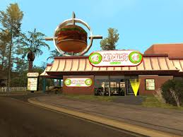
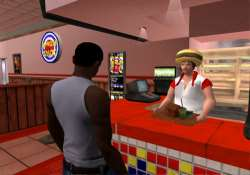

America's favorite national quick service factory farmed restaurant chain, and shining beacon of the global march towards cultural homogenization.
― Description at LCN.com.
About Us
Burger Shot (formerly The Burger Shot) is a chain of hamburger fast-food restaurants. The player can buy stocks from them in the Lcn-exchange.com website in Grand Theft Auto V™. The first appearance of Burger Shot (as "The Burger Shot") at the North Point Mall, Vice Point, Vice City in GTA Vice City™.
It is a parody of American fast food chains Hardee's™ and Burger King™. The name resembles Burger King™, but the style of logo resembles Hardee's™. Burger Shot first appeared in the form of "The Burger Shot," a rudimentary restaurant in GTA Vice City (among many other less known outlets in the Game) where the player can replenish their health if it is below 100 points.

The restaurant has risen in prominence in GTA San Andreas™, where the restaurant becomes a large chain based in multiple locations. In addition to replenishing health, Burger Shot in GTA San Andreas™ allows the player to eat from a range of set meals in order to eliminate their hunger, or accumulate fat by eating fatty food.
While it is impossible to access Burger Shot outlets in GTA Chinatown Wars™, players can obtain food prizes from Burger Shot in the form of fries or burgers for health by purchasing its scratch cards.
Back to top.